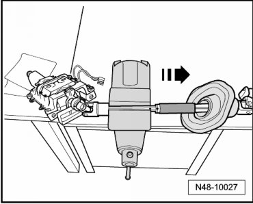
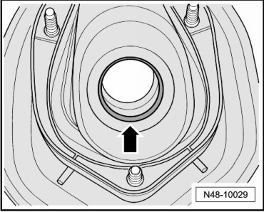
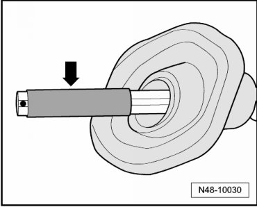

Protective Boot
Protective Boot
Removing
- Remove steering column. Refer to Steering Column.
- Clamp steering column in vise as depicted in illustration.

- Mark position of upper part to lower part.
- Remove lower part from upper part with a firm jerk - direction of arrow -.
- Remove protective boot from lower part.
Installing
Lubricate seal - arrow - slightly using (G 052 172 A1).

- Before installation, check contact surface of the guide on the lower part - arrow - for dirt and scores.

If contact surface has scores, replace steering column since a sufficient sealing between steering column and protective boot can no longer be guaranteed.
- Slide protective boot onto lower part by slightly rotating it as shown in illustration.
- Assemble steering column so that markings align and sliding together is performed with a jerk.
- If the steering column was assembled correctly, the lower part cannot be pulled off the upper part with normal force.
- Install steering column.Steering Column.